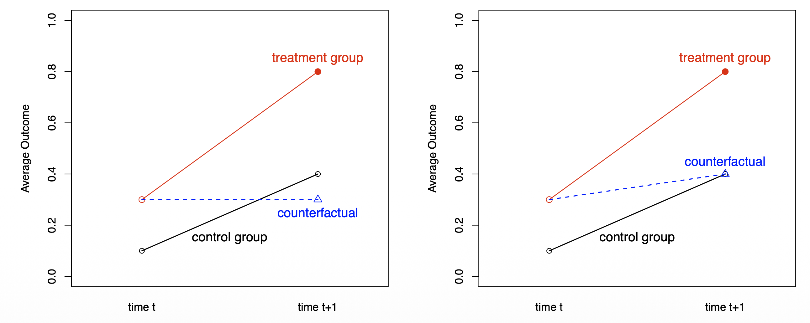

Overview
- 이번 포스트에서는 인과추론의 가장 강력하고 널리 쓰이는 도구 중 하나인 이중차분법(Differences in Differences, DiD)에 대해 다룹니다.
- 특히 잠재적 결과(Potential Outcomes) 프레임워크를 기반으로 DiD 추정량이 도출되는 과정을 수학적으로 엄밀하게 살펴보겠습니다.
참고 자료: 본 포스트는 이상학 교수님의 “Differences in Differences & Synthetic Control Method” 강의 자료를 바탕으로 재구성되었습니다.
1. Identification Problem
- 인과추론의 근본적인 문제는 반사실(Counterfactual)을 관찰할 수 없다는 데 있습니다.
1.1 Basic Setup
두 개의 그룹과 두 개의 시점이 있다고 가정해 봅시다.
집단 (Groups):
- \(G_i = 1\): 처치 집단 (Treated Group, 예: 최저임금이 인상된 뉴저지주)
- \(G_i = 0\): 통제 집단 (Control Group, 예: 최저임금이 동결된 펜실베이니아주)
시점 (Time Periods):
- \(t = 0\): 개입 이전 (Pre-period)
- \(t = 1\): 개입 이후 (Post-period)
1.2 Potential Outcomes
- \(Y_{it}(x)\)를 시점 \(t\)에서 처치 상태가 \(x\)일 때 개인 \(i\)의 잠재적 결과라고 정의합니다.
- 우리가 실제로 관찰하는 결과 \(Y_{it}\)는 일치성(Consistency) 가정에 의해 다음과 같이 표현됩니다.
\[ Y_{it} = G_{it}Y_{it}(1) + (1-G_{it})Y_{it}(0) \]
- 아래 테이블은 DiD 디자인에서 관측되는 잠재적 결과(Potential Outcomes)의 기댓값을 나타냅니다.
| Pre-period (\(t=0\)) | Post-period (\(t=1\)) | |
|---|---|---|
| Treated group (\(G_i=1\)) | \(\color{purple}{\mathbb{E}[Y_{i0}(0) \mid G_i=1]}\) | \(\color{green}{\mathbb{E}[Y_{i1}(1) \mid G_i=1]}\) |
| Control group (\(G_i=0\)) | \(\color{orange}{\mathbb{E}[Y_{i0}(0) \mid G_i=0]}\) | \(\color{blue}{\mathbb{E}[Y_{i1}(0) \mid G_i=0]}\) |
1.3 ATT
- 우리의 목표는 처치 집단에 대한 평균 처치 효과(ATT: Average Treatment Effect on the Treated)를 구하는 것입니다.
\[ \tau_{ATT} = \mathbb{E}[{\color{green}{Y_{i1}(1)}} - {\color{red}{Y_{i1}(0)}} | G_i=1] \]
- 이 식을 풀면 다음과 같습니다. \[
\tau_{ATT} = \underbrace{\color{green}{\mathbb{E}[Y_{i0}(1) \mid G_i=1]}}_{\text{(a) 관찰 가능}} - \underbrace{\color{red}{\mathbb{E}[Y_{i1}(0) | G_i=1]}}_{\text{(b) 반사실 (관찰 불가)}}
\]
- (a): 처치를 받은 집단의 처치 후 결과이므로 데이터에서 관찰할 수 있습니다.
- (b):
- 문제의 핵심입니다.
- 처치를 받은 집단이 만약 처치를 받지 않았더라면 겪었을 결과입니다.
- 이는 현실에 존재하지 않으므로, 적절한 대조군을 통해 추정해야 합니다.
2. Three Control Strategies
- 반사실 \(\mathbb{E}[Y_{i1}(0) | G_i=1]\)을 대체하기 위해 우리는 어떤 전략을 취할 수 있을까요?

전략 1: 전후 비교 (Before-and-After Design)
- 처치 집단의 개입 이전 시점(\(t=0\)) 결과를 반사실로 사용하는 방법입니다.
\[ {\color{red}{\mathbb{E}[Y_{i1}(0) | G_i=1]}} \approx {\color{purple}{\mathbb{E}[Y_{i0}(0) | G_i=1]}} \]
- 가정: 시간이 지나도 결과에 자연적인 변화(Trend)가 없어야 합니다.
- 한계: 경기 변동이나 계절적 요인 등 시간의 흐름에 따른 변화를 무시합니다.
전략 2: 횡단면 비교 (Cross-sectional Design)
- 가장 단순한 접근은 처치 후 시점(\(t=1\))에서 통제 집단의 결과를 반사실로 사용하는 것입니다.
\[ {\color{red}{\mathbb{E}[Y_{i1}(0) | G_i=1]}} \approx {\color{blue}{\mathbb{E}[Y_{i1}(0) | G_i=0]}} \]
- 가정: 처치 여부가 결과와 독립적이어야 합니다 (Selection Bias가 없어야 함).
- 한계: 두 집단은 처치 여부 외에도 원래부터 다른 특성을 가질 수 있습니다. 예를 들어, 뉴저지와 펜실베이니아는 경제 상황이 다를 수 있습니다.
3. 이중차분법 (Difference-in-Differences)
- DiD는 위 두 전략의 한계를 극복하기 위해 “집단 간 차이”와 “시점 간 차이”를 결합합니다.
3.1 평행 추세 가정 (Parallel Trends Assumption)
DiD의 핵심 가정입니다.
“처치가 없었더라면, 처치 집단의 평균 결과 변화량은 통제 집단의 변화량과 같았을 것”이라는 가정입니다.
수식으로는 다음과 같습니다: \[ \mathbb{E}[{\color{red}{Y_{i1}(0)}} - {\color{purple}{Y_{i0}(0)}} | G_i=1] = \mathbb{E}[{\color{blue}{Y_{i1}(0)}} - {\color{orange}{Y_{i0}(0)}} | G_i=0] \]
이 가정을 이용해 우리가 모르는 반사실을 유도해 봅시다.
위 식을 이항하면 반사실 \(\mathbb{E}[Y_{i1}(0) | G_i=1]\)은 다음과 같이 표현됩니다.
\[ \underbrace{{\color{red}{\mathbb{E}[Y_{i1}(0) | G_i=1]}}}_{\text{반사실}} = \underbrace{{\color{purple}{\mathbb{E}[Y_{i0}(0) | G_i=1]}}}_{\text{처치집단 초기값}} + \underbrace{({\color{blue}{\mathbb{E}[Y_{i1}(0) | G_i=0]}} - {\color{orange}{\mathbb{E}[Y_{i0}(0) | G_i=0]}})}_{\text{통제집단의 시간 추세}} \]
- 즉, 처치 집단의 초기값에 통제 집단에서 관찰된 ’시간에 따른 변화분(Trend)’을 더해주면, 처치 집단이 처치를 받지 않았을 때의 결과를 추정할 수 있습니다.

3.2 DiD Identification Result
- 이제 ATT 식에 위에서 구한 반사실을 대입해 보겠습니다.
\[ \begin{aligned} \tau_{ATT} &= {\color{green}{\mathbb{E}[Y_{i1} | G_i=1]}} - {\color{red}{\mathbb{E}[Y_{i1}(0) | G_i=1]}} \\ &= {\color{green}{\mathbb{E}[Y_{i1} | G_i=1]}} - \left({\color{purple}{\mathbb{E}[Y_{i0} | G_i=1]}} + ({\color{blue}{\mathbb{E}[Y_{i1} | G_i=0]}} - {\color{orange}{\mathbb{E}[Y_{i0} | G_i=0]}}) \right) \\ &= \left( {\color{green}{\mathbb{E}[Y_{i1} | G_i=1]}} - {\color{purple}{\mathbb{E}[Y_{i0} | G_i=1]}} \right) - \left( {\color{blue}{\mathbb{E}[Y_{i1} | G_i=0]}} - {\color{orange}{\mathbb{E}[Y_{i0} | G_i=0]}} \right) \end{aligned} \]
- 이 수식이 의미하는 바는 명확합니다:
- First Difference: 처치 집단의 전후 차이를 구합니다 (시간 효과 + 처치 효과).
- Second Difference: 통제 집단의 전후 차이를 구합니다 (순수 시간 효과).
- Difference-in-Differences: 1번에서 2번을 빼면 순수한 처치 효과(Treatment Effect)만 남습니다.
4. Estimation
- 실제 데이터 분석에서는 회귀분석을 통해 표준오차(Standard Error)와 함께 추정량을 계산합니다.
4.1 이원 고정 효과 모형 (Two-way Fixed Effects Model)
- 단순한 평균의 차감 계산이 아니라, 회귀분석을 이용하면 표준오차(Standard Error)를 계산하고 다른 공변량을 통제하기 용이합니다.
4.1.1 회귀식의 정의
- 패널 데이터(혹은 반복 횡단면 데이터)에 대해 다음과 같은 선형 회귀식을 설정합니다.
\[ Y_{it} = \alpha + \gamma G_i + \beta t + \tau X_{it} + \epsilon_{it} \]
- 여기서 변수들의 정의는 다음과 같습니다.
- \(G_i\): 집단 더미 (Group Dummy). 처치 집단이면 1, 통제 집단이면 0.
- \(t\): 시점 더미 (Time Dummy). 개입 이후(Post)면 1, 이전(Pre)이면 0.
- \(X_{it}\): 상호작용항 (Interaction Term). \(G_i \times t\)와 동일하며, ‘처치 집단이면서 동시에 개입 이후인 경우’에만 1을 갖습니다.
4.1.2 계수의 유도 과정 (Derivation)
- 이 식을 이용해 4가지 경우의 수(처치/통제 \(\times\) 전/후)에 대한 기댓값 \(E[Y_{it}]\)를 계산해보면 각 계수의 의미가 명확해집니다.
| 구분 | 시점 (\(t\)) | 집단 (\(G_i\)) | 상호작용 (\(X_{it}\)) | 기댓값 \(E[Y_{it}]\) | 의미 |
|---|---|---|---|---|---|
| 통제 집단 / 전 | 0 | 0 | 0 | \(\alpha\) | 베이스라인 |
| 통제 집단 / 후 | 1 | 0 | 0 | \(\alpha + \beta\) | 시간의 흐름에 따른 자연적 변화 (\(\beta\)) 반영 |
| 처치 집단 / 전 | 0 | 1 | 0 | \(\alpha + \gamma\) | 집단 간의 고유한 차이 (\(\gamma\)) 반영 |
| 처치 집단 / 후 | 1 | 1 | 1 | \(\alpha + \gamma + \beta + \tau\) | 시간(\(\beta\)) + 집단(\(\gamma\)) + 정책효과(\(\tau\)) |
4.1.3 이중차분 (Difference-in-Differences) 계산
- 위의 표를 바탕으로 DiD 연산을 수행해 봅시다.
- 시간 전후 차이 (After - Before):
- 통제 집단의 변화: \((\alpha + \beta) - \alpha = \mathbf{\beta}\) (순수 시간 효과)
- 처치 집단의 변화: \((\alpha + \gamma + \beta + \tau) - (\alpha + \gamma) = \mathbf{\beta + \tau}\) (시간 효과 + 처치 효과)
- 집단 간 차이 (Treated - Control):
- 변화량의 차이: \((\beta + \tau) - \beta = \mathbf{\tau}\)
- 결론적으로 회귀계수 \(\tau\)는 우리가 구하고자 하는 이중차분 추정량(ATT)과 정확히 일치합니다.
4.2 실제 사례: Card & Krueger (1994)
- 최저임금 인상이 고용에 미치는 영향을 분석한 고전적인 연구입니다.
- Question: 최저임금을 올리면 고용이 감소하는가?
- Setting: 1992년 뉴저지(NJ)는 최저임금을 $4.25에서 $5.05로 인상(처치 집단), 펜실베이니아(PA)는 동결(통제 집단).
- Result: 두 주(State)의 패스트푸드점 고용 변화를 DiD로 분석한 결과, 통념과 달리 고용 감소 효과가 뚜렷하지 않음을 보였습니다.
5. Threat to Identification and Falsification Test
- DiD가 강력한 도구이긴 하지만, 평행 추세 가정이 위배되면 결과는 편향됩니다.
5.1 Ashenfelter’s Dip
- 직업 훈련 프로그램 등의 효과를 분석할 때 자주 나타나는 현상입니다.
- 처치를 받기 직전에 소득이 일시적으로 급락하는 현상을 말합니다.
- 이 경우 처치 이전의 추세가 평행하지 않을 수 있으므로 주의해야 합니다.
5.2 위조 검증 (Falsification Test)
- 평행 추세 가정을 간접적으로 검증하기 위해 개입 이전 시점(Pre-treatment period)들의 데이터를 사용합니다.
- 개입이 없었던 과거 기간 동안에도 두 집단의 추세가 평행했는지 확인하는 것입니다. 만약 과거에도 추세가 달랐다면, 미래에도 달랐을 가능성이 높습니다.